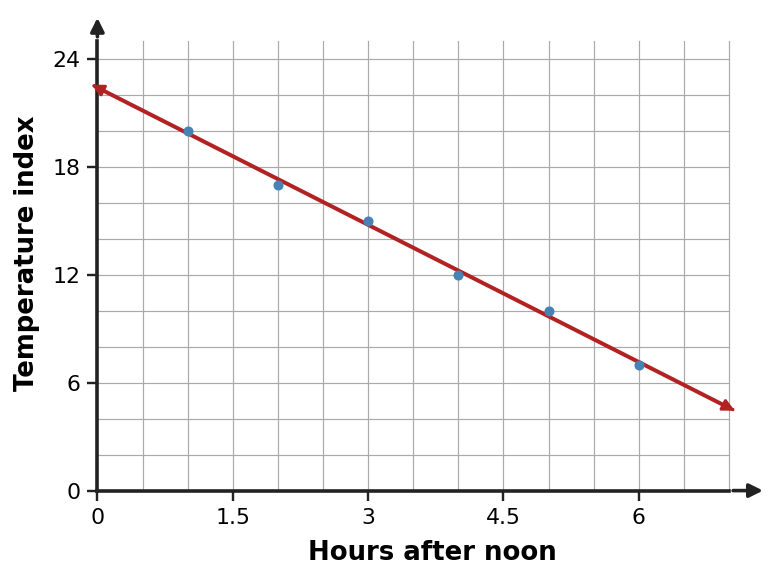
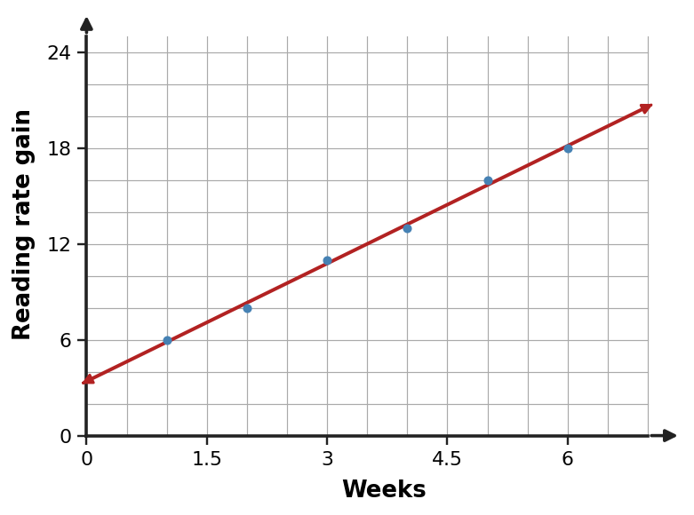

Algebra Practice 2.5 :::: Set 2
1. Describe the trend in the scatter plot and decide whether a linear model is reasonable for the displayed data. Support your decision with the pattern of points.

2. Describe the trend in the scatter plot and decide whether a linear model is reasonable for the displayed data. Support your decision with the pattern of points.

3. Describe the trend in the scatter plot and decide whether a linear model is reasonable for the displayed data. Support your decision with the pattern of points.

4. A linear model is $y=\frac{3}{2}x+20$. Use the model to predict $y$ when $x=12$ and interpret the result as a model prediction rather than an exact observed value.
5. A linear model is $y=\frac{5}{2}x+5$. Use the model to predict $y$ when $x=10$ and interpret the result as a model prediction rather than an exact observed value.
6. A linear model is $y=3x+7$. Use the model to predict $y$ when $x=8$ and interpret the result as a model prediction rather than an exact observed value.
7. A model for a subscription total is $C=-12m+293$, where $m$ is months and $C$ is dollars. Interpret both the slope and intercept in context.
8. A model for the value of a device is $V=9t+321$, where $t$ is months and $V$ is dollars. Interpret both the slope and intercept in context.
9. A model for the amount of water in a tank is $V=-8t+106$, where $t$ is minutes and $V$ is liters. Interpret both the slope and intercept in context.
10. A data set is shown below. A student says a straight line fits the pattern perfectly. Assess the reasoning using the changes in the outputs.
| $x$ | $y$ |
|---|---|
| $0$ | $7$ |
| $1$ | $11$ |
| $2$ | $18$ |
| $3$ | $27$ |
11. A data set is shown below. A student says a straight line fits the pattern perfectly. Assess the reasoning using the changes in the outputs.
| $x$ | $y$ |
|---|---|
| $0$ | $18$ |
| $1$ | $22$ |
| $2$ | $28$ |
| $3$ | $35$ |
12. A data set is shown below. A student says a straight line fits the pattern perfectly. Assess the reasoning using the changes in the outputs.
| $x$ | $y$ |
|---|---|
| $0$ | $30$ |
| $1$ | $33$ |
| $2$ | $39$ |
| $3$ | $48$ |
13. Measurements were collected for $x=2$ through $x=10$. Predicting at $x=7$: classify the prediction as interpolation or extrapolation and explain which is generally safer when the observed trend is only approximately linear.
14. Temperatures were recorded from 8 A.M. through 2 P.M. Predicting noon: classify the prediction as interpolation or extrapolation and explain which is generally safer when the observed trend is only approximately linear.
15. Measurements were collected for $x=5$ through $x=20$. Predicting at $x=24$: classify the prediction as interpolation or extrapolation and explain which is generally safer when the observed trend is only approximately linear.
16. Use the observed-versus-predicted table to judge whether the model errors are small and balanced enough for a rough trend estimate. Identify the largest absolute error.
| Input | Observed | Predicted | Observed - Predicted |
|---|---|---|---|
| 1 | 11 | 10 | 1 |
| 2 | 13 | 13 | 0 |
| 3 | 17 | 16 | 1 |
| 4 | 18 | 19 | -1 |
17. Use the observed-versus-predicted table to judge whether the model errors are small and balanced enough for a rough trend estimate. Identify the largest absolute error.
| Input | Observed | Predicted | Observed - Predicted |
|---|---|---|---|
| 1 | 8 | 9 | -1 |
| 2 | 12 | 12 | 0 |
| 3 | 15 | 14 | 1 |
| 4 | 20 | 21 | -1 |
18. Use the observed-versus-predicted table to judge whether the model errors are small and balanced enough for a rough trend estimate. Identify the largest absolute error.
| Input | Observed | Predicted | Observed - Predicted |
|---|---|---|---|
| 1 | 15 | 14 | 1 |
| 2 | 18 | 19 | -1 |
| 3 | 23 | 22 | 1 |
| 4 | 27 | 28 | -1 |
19. A candle is 60 centimeters tall and burns down 2 centimeters each hour. Let $h$ be hours and $H$ be height. Write an equation that models the situation.
20. A tank starts with 76 liters and drains 4 liters each minute. Let $t$ be minutes and $V$ be volume. Write an equation that models the situation.
21. A student starts with 70 dollars and saves 7 dollars each week. Let $w$ be weeks and $S$ be savings. Write an equation that models the situation.
22. A pattern follows the rule $y=4x$. Find the output for $x=6$ and give the ordered pair.
23. A pattern follows the rule $y=x+6$. Find the output for $x=7$ and give the ordered pair.
24. A pattern follows the rule $y=-4x-2$. Find the output for $x=5$ and give the ordered pair.